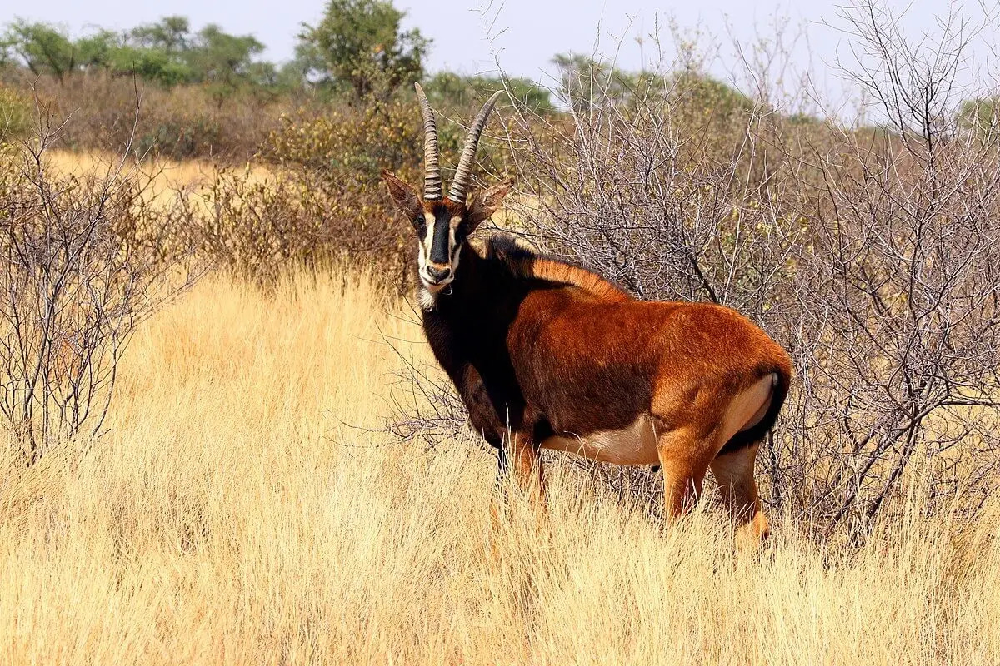

Giant Sable Antelope
The Giant Sable Antelope (Palanca Negra Gigante) is a rare and majestic species found only in Angola, making it one of the country's most unique and cherished national symbols. This elegant animal is known for its glossy black coat, white facial markings, and long, curved horns that can reach over a meter in length. Endemic to Angola and mainly located in Cangandala National Park and the Luando Reserve, the Giant Sable was once feared extinct due to decades of civil war and illegal hunting. Its rediscovery in the early 2000s sparked national pride and led to strong conservation efforts to protect it.

Beyond its biological importance, the Giant Sable Antelope holds deep cultural value. It is proudly featured as the official symbol of Angola’s national football team, nicknamed “Palancas Negras”. You can also find it on coins, logos, and other emblems that represent Angolan identity and heritage. Preserving the Palanca Negra Gigante means protecting not just a species, but a living emblem of Angola’s strength, resilience, and natural beauty.